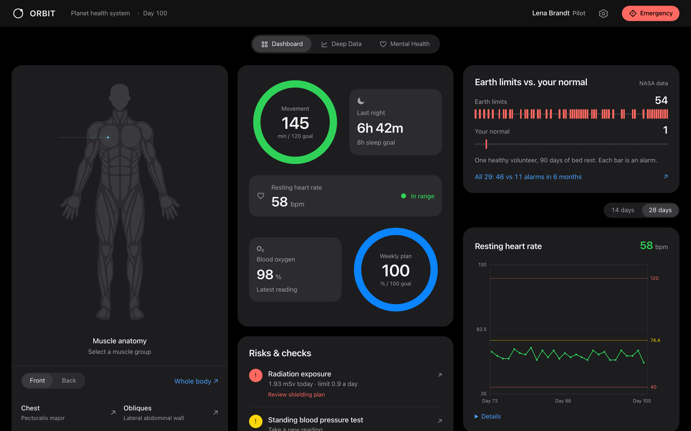
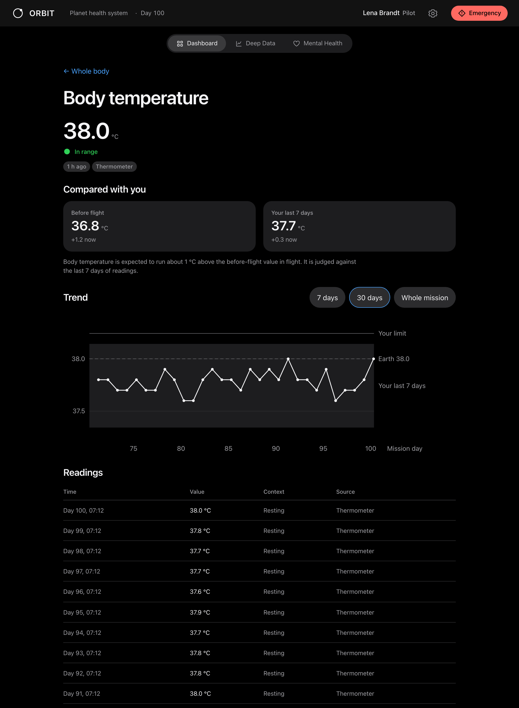
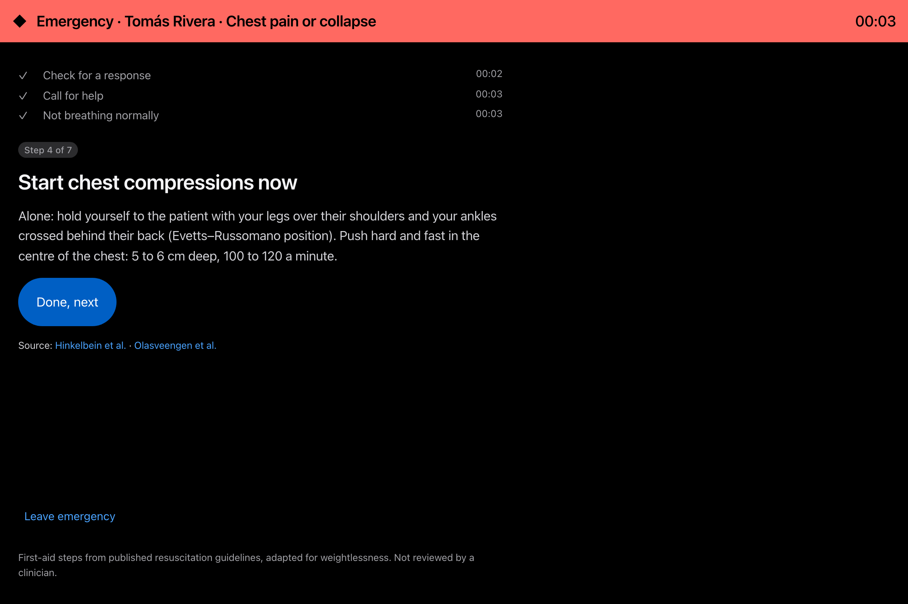

One dashboard any crew member can read.
- A body map: tap a region to see what is watched there
- Activity, sleep, and heart rate at a glance
- One list of risks and checks, each with a next step
- Real NASA data, judged both ways, on the home screen
Health monitoring for astronauts that judges every reading against the astronaut’s own body, and says what to do next.
NASA Space Apps Challenge 2026 · Create Health Monitoring Software for Astronauts on Space Missions
1 / 7The body changes in space, so Earth’s medical limits raise alarms for healthy astronauts again and again. A crew that gets false alarms stops trusting them, and then misses the real one.
for a question to a doctor on Earth and its answer
higher resting body temperature in flight; blood pressure drops
of medical training for the crew member who has to decide
29 healthy volunteers, 2,184 days of NASA head-down bed rest, the standard way to imitate weightlessness on the ground. Every day judged twice, with the same rule: two days in a row over the line.
of days raised an alarm · about 24 alarms per person in 6 months
of days raised an alarm · about 11 alarms per person in 6 months
ORBIT also caught a slow heart-rate rise from 55 to about 75 bpm that never reached Earth’s line of 100. Reproduced by automated tests from the raw data.
3 / 7


github.com/jakobtfr/orbit
Prototype, not a medical device. Bed rest is a ground stand-in for flight; limits and emergency steps are not yet reviewed by a clinician. The demo astronaut’s readings are scripted.
7 / 7